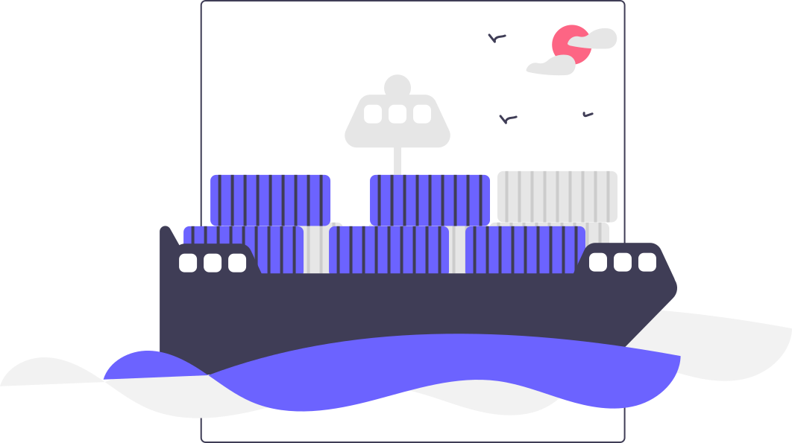

如果你已经有比较明确的目标地区和车型需求，我们会先看这单在手续、时间和运输上是否现实。
能做再继续往下谈，不能做也会尽早说明。现在这项业务以少量协作为主，不做大批量推广。

TK168 EXPORT GALLERY
目前只承接少量汽车出口协作，会先确认地区、车型和交付安排，再决定是否继续推进。
EXPORT DESK
这里只做简单展示，说明目前有这项业务，以及大致怎么配合。
如果你已经有比较明确的目标地区和车型需求，我们会先看这单在手续、时间和运输上是否现实。
能做再继续往下谈，不能做也会尽早说明。现在这项业务以少量协作为主，不做大批量推广。
WHAT WE HANDLE
先把出口本身最关键的节点看清楚，不再往外扩太多内容。
先看地区要求、交付时间和路线，再决定这单要不要继续谈。
先把车况、手续和目的地要求核清，避免做到一半再返工。

按实际窗口安排出运、到港和交接，减少中途反复协调。
HOW IT WORKS
把地区、车型和大概时间告诉我们。
我们按条件整理可谈的车源和重点事项。
能做再继续核对文件和限制条件。
确认后再推进运输、到港和交接。
有明确的地区、车型和时间后，再按单沟通是否承接。